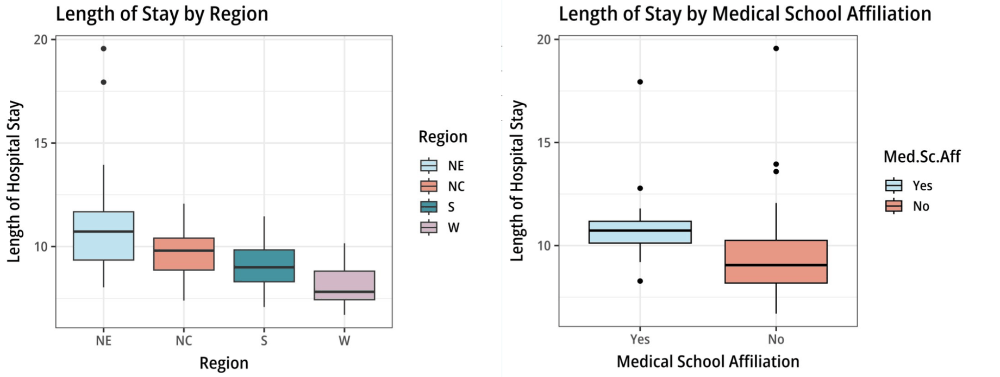
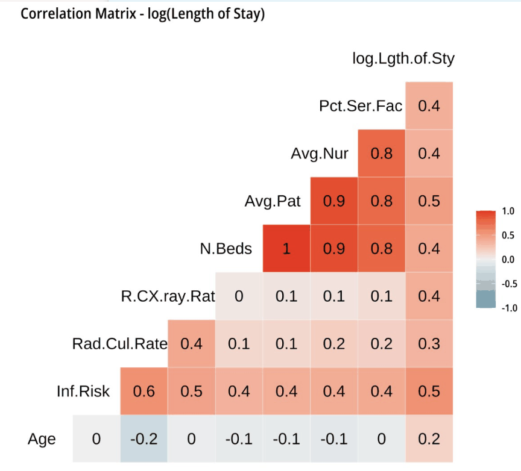

Hospital Length of Stay Prediction
Modeling hospital-level average length of stay and comparing regression and kNN approaches to identify predictive associations.
Which hospital characteristics are associated with average length of stay?
The analysis uses records from 113 hospitals to model average length of stay. I compared an additive regression, a regression with interactions and polynomial terms, and kNN. Hospital-level associations cannot establish which interventions would reduce an individual patient’s stay.
113 hospitals, several operational and clinical factors
Each hospital record includes infection risk, number of beds, average patient and nursing counts, percent of services offered, region, medical school affiliation, average patient age, and diagnostic testing rates, alongside its average length of stay.

Length of stay was longest in the Northeast and shortest in the West, and ran higher at hospitals with a medical school affiliation.
Start interpretable, then see if complexity earns its keep
I built a simple, additive regression first so every coefficient stays interpretable, then compared it against a complex regression with interaction and polynomial terms, and a k-NN model, to see whether the added flexibility actually improved predictions.

Infection Risk was tied for the strongest correlation with length of stay of any single predictor, a signal that carried through to every model below.
The complex model improved reported errors, with a complexity trade-off
The prediction errors below are on the log length-of-stay scale. Complex MLR had lower reported MSE, RMSE, and MAE and higher adjusted R² than the alternatives. AIC favored complex MLR, while BIC favored simple MLR (−104.3 versus −69.9), so model selection depends on the criterion.
| Model | MSE | RMSE | Adj. R² | MAE | AIC | BIC |
|---|---|---|---|---|---|---|
| Simple MLR | 0.012 | 0.108 | 0.597 | 0.085 | -127.1 | -104.3 |
| Complex MLR | 0.009 | 0.100 | 0.669 | 0.077 | -138.3 | -69.9 |
| k-NN | 0.016 | 0.128 | 0.352 | 0.104 | N/A | N/A |

Infection Risk climbed with length of stay in every region, though the Northeast showed the steepest relationship, which is what justified the interaction term in the complex model.
What the data actually showed
Infection Risk was the most consistent predictor
It was significant in every model tested, simple, complex, and as an interaction term, making it an association worth investigating, not evidence that intervening on it will shorten stays.
The simple model was a solid, honest baseline
With clear coefficients and meaningful inference, the simple MLR had an adjusted R² of 0.597, before any interaction or polynomial terms were added.
Added complexity paid off here
Interaction and polynomial terms lifted adjusted R² from 0.597 to 0.669 and lowered every error metric, a substantial improvement for the added complexity.
More flexibility isn't automatically better
k-NN had the highest reported prediction errors and was less straightforward to interpret than the regression models, a useful reminder that flexibility alone doesn't guarantee a better model.